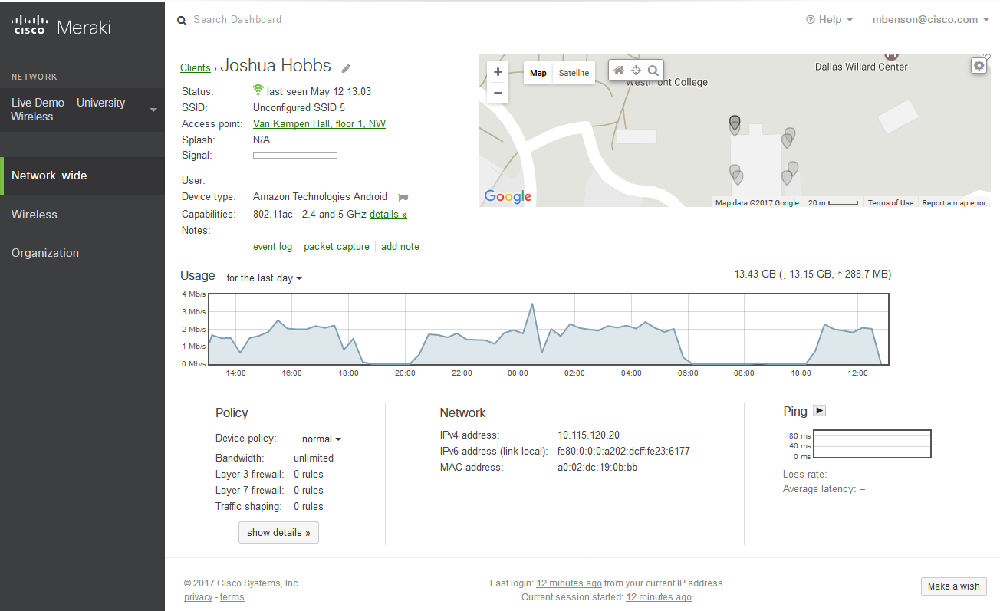

23.3.1 Gestión de riesgos
La gestión de riesgos implica seleccionar y especificar controles de seguridad para una organización. Es parte de un programa continuo de seguridad de la información en toda la organización que involucra la gestión de riesgos para la organización o para las personas asociadas con la operación de un sistema.
La gestión de riesgos es un proceso continuo y cíclico de varios pasos, como se ve en la figura.
Un proceso de gestión de riesgos

El riesgo se determina como la relación entre la amenaza, la vulnerabilidad y la naturaleza de la organización. Primero implica responder a las siguientes preguntas como parte de una evaluación de riesgos:
La publicación especial de 800-30 del NIST describe la evaluación de riesgos como:
… El proceso de identificar, estimar y priorizar los riesgos de seguridad de la información. La evaluación del riesgo requiere un análisis cuidadoso de la información sobre amenazas y vulnerabilidades para determinar en qué medida las circunstancias o eventos podrían afectar negativamente a una organización y la probabilidad de que ocurran tales circunstancias o eventos.
La publicación completa está disponible para su descarga desde NIST.
Una actividad obligatoria en la evaluación de riesgos es identificar amenazas y vulnerabilidades y relacionarlas entre sí mediante un proceso que suele denominarse vinculación entre amenaza y vulnerabilidad (threat-vulnerability T-V). Los pares T-V se pueden utilizar como base para indicar el riesgo antes de que se implementen los controles de seguridad. Esta referencia puede entonces compararse con evaluaciones de riesgo continuas como medio para evaluar la efectividad en la gestión de riesgos. Esta parte de la evaluación de riesgos se denomina determinación del perfil de riesgo inherente de una organización.
Después de que se identifican los riesgos, es posible asignarles una puntuación o ponderarlos como una forma de priorizar estrategias de reducción del riesgo. Por ejemplo, las vulnerabilidades que se han correspondido con múltiples amenazas pueden recibir clasificaciones más altas. Además, los pares T-V que se mapean con el mayor impacto institucional también recibirán ponderaciones más altas.
La tabla enumera las cuatro formas posibles de responder a los riesgos que se han identificado, en función de sus ponderaciones o puntuaciones.
| Riesgo | Descripción |
|---|---|
| Evasión de riesgos |
|
| Reducción de riesgos |
|
| Riesgo compartido |
|
| Retención de riesgo |
|
23.3.2 Compruebe su comprensión - Identifique la respuesta al riesgo
23.3.3 Administración de vulnerabilidades
Según el NIST, la gestión de vulnerabilidades es una práctica de seguridad diseñada para prevenir de forma proactiva la explotación de las vulnerabilidades de IT que existen dentro de una organización. Tiene por objetivo reducir el tiempo y el dinero invertidos en solucionar las vulnerabilidades y su aprovechamiento. La gestión proactiva de las vulnerabilidades de los sistemas reducirá o eliminará el potencial de explotación e implicará considerablemente menos tiempo y esfuerzo que responder después de que se haya producido una exploitation.
La gestión de vulnerabilidades requiere una metodología sólida para identificar vulnerabilidades usando boletines de seguridad de proveedores y otros sistemas de información como CVE. El personal de seguridad debe tener la competencia para evaluar el impacto, si lo hubiera, de la información sobre la vulnerabilidad que reciba. Las soluciones deben identificarse con medios efectivos para implementar y evaluar las consecuencias imprevistas de las soluciones implementadas. Por último, la solución se debe probar para verificar que se eliminó la vulnerabilidad.
Ciclo de vida de la Administración de vulnerabilidades

Descubra
Haga un inventario de todos los activos en la red e identifique los detalles del host, incluidos los sistemas operativos y los servicios abiertos, para identificar vulnerabilidades. Desarrolle un valor de referencia para la red. Identifique las vulnerabilidades de seguridad usando un cronograma periódico automatizado.
Priorizar activos
Clasifique los activos en grupos o unidades comerciales y asigne un valor comercial a los grupos de activos en función de su importancia para las operaciones comerciales.
Evaluar
Determine un perfil de riesgo de línea base para eliminar los riesgos en función de la criticidad, la vulnerabilidad, las amenazas y la clasificación de los activos.
Informe
Mida el nivel de riesgo comercial asociado con sus activos de acuerdo con sus políticas de seguridad. Documentar un plan de seguridad, monitorear la actividad sospechosa y describir vulnerabilidades conocidas.
Corregir
Priorice según el riesgo comercial y aborde las vulnerabilidades en orden de riesgo.
Verificar
Verifique que las amenazas se hayan eliminado mediante auditorías de seguimiento.
23.3.4 Administración de activos
La administración de activos implica implementar sistemas que rastrean la ubicación y configuración de dispositivos y software en red en toda una empresa. Como parte de cualquier plan de administración de la seguridad, las organizaciones deben saber qué equipo tiene acceso a la red, dónde se encuentra ese equipo dentro de la empresa y su posición lógica en la red y qué software y datos almacenan o usan esos sistemas. La administración de activos no solo realiza un seguimiento de los activos de la empresa y de otros dispositivos autorizados, sino que también puede usarse para identificar los dispositivos que no están autorizados en la red.
El NIST especifica en su publicación NISTIR 8011 (Volumen 2) los registros detallados que deben mantenerse para cada dispositivo. El NIST describe las posibles técnicas y herramientas para poner en práctica un proceso de administración de activos:
En la figura se describe este proceso a grandes rasgos.

23.3.5 Administración de dispositivos móviles
La administración de dispositivos móviles (Mobile Device Management MDM), especialmente en la era de BYOD, supone retos especiales para la administración de activos. No es posible controlar físicamente los dispositivos móviles en las instalaciones de una organización. Pueden ocurrir extravíos, robos o alteraciones, lo que pone en peligro el acceso a los datos y a la red. Parte de un plan MDM actúa cuando los dispositivos dejan la custodia de la parte responsable. Entre las posibles medidas, se incluye deshabilitar el dispositivo extraviado, encriptar los datos en el dispositivo y mejorar el acceso a los dispositivos con medidas de autenticación más resistentes.
Debido a la diversidad de dispositivos móviles, es posible que el diseño de algunos dispositivos que se usen en la red sea menos seguro que el de otros. Los administradores de redes deben adoptar la premisa de que ningún dispositivo móvil es confiable hasta que la organización lo proteja como se debe.
Los sistemas MDM, como Cisco Meraki Systems Manager, que se muestra en la figura, permiten al personal de seguridad configurar, monitorear y actualizar un conjunto muy diverso de clientes móviles desde la nube.

23.3.6 Administración de configuraciones
La administración de configuraciones se ocupa del inventario y control de configuraciones de hardware y software de los sistemas. Las configuraciones seguras de los dispositivos reducen los riesgos de seguridad. Por ejemplo, una organización ofrece muchas computadoras de escritorio y portátiles a sus trabajadores. Esto aumenta la superficie de ataque de la organización, ya que cada sistema puede ser vulnerable a ataques. Para ello, la organización puede crear imágenes de software y configuraciones de hardware de referencia para cada tipo de máquina. Estas imágenes pueden incluir un paquete básico de software necesario, software de seguridad para terminales y políticas de seguridad personalizadas que controlen el acceso del usuario a los aspectos de la configuración del sistema que podrían producir vulnerabilidades. Las configuraciones de hardware pueden especificar los tipos permitidos de interfaces de red y de almacenamiento externo.
La gestión de la configuración se extiende también a la configuración de software y hardware de los dispositivos y servidores de red. Según la definición del NIST, la administración de configuración:
Comprende una colección de actividades enfocadas en establecer y mantener la integridad de productos y sistemas, mediante el control de los procesos para inicializar, cambiar y monitorear las configuraciones de esos productos y sistemas.
La publicación especial 800-128 del NIST sobre la gestión de la configuración para la seguridad de la red está disponible para su descarga desde NIST.
Para los dispositivos de interconexión de redes, hay disponibles herramientas de software que realizan copias de respaldo de las configuraciones, detectan cambios en los archivos de configuración y permiten cambiar de una vez las configuraciones en muchos dispositivos.
Con la llegada de los centros de datos y la virtualización en la nube, la gestión de varios servidores supone retos especiales. Herramientas como Puppet, Chef, Ansible y SaltStack permiten una gestión eficiente de los servidores que se utilizan en la informática basada en la nube.
23.3.7 Administración de parches empresariales
La administración de parches está relacionada con la gestión de vulnerabilidades. Las vulnerabilidades aparecen con frecuencia en sistemas operativos y firmware críticos de dispositivos de red, servidores y clientes. El software de aplicación, especialmente las aplicaciones de Internet y los marcos como Acrobat, Flash y Java, también se descubre con frecuencia por tener vulnerabilidades. La administración de parches involucra todos los aspectos del parche de software, incluida la identificación de los parches necesarios, la adquisición, distribución, instalación y verificación de que el parche esté instalado en todos los sistemas necesarios. La instalación de parches suele ser la manera más efectiva de mitigar las vulnerabilidades de software. A veces, es la única manera de hacerlo.
Algunas regulaciones de cumplimiento requieren la administración de parches, como Sarbanes Oxley (SOX) y la Ley de Portabilidad y Responsabilidad de Seguros Médicos (Health Insurance Portability and Accountability Act HIPAA). No implementar los parches de manera sistemática y oportuna podrían resultar fallas auditorías y la aplicación de sanciones por incumplimiento. La administración de parches depende de los datos de gestión de activos para identificar los sistemas que ejecutan software que requiere parches. El software de administración de parches está disponible en empresas como SolarWinds y LANDesk. Administrador de configuración de Microsoft System Center (Microsoft System Center Configuration Manager SCCM) es una herramienta de nivel empresarial para la distribución automatizada de parches a un gran número de estaciones de trabajo y servidores de Microsoft Windows.

23.3.8 Técnicas de administración de parches
Basado en agentes
Este requiere que un agente de software se ejecute en cada host donde se implementen parches. El agente informa si hay software vulnerable instalado en el host. El agente se comunica con el servidor de administración de parches, determina si hay parches que deban instalarse y los instala. El agente se ejecuta con los privilegios suficientes para poder instalar los parches. Los enfoques con base en agentes son el método preferido para implementar parches en dispositivos móviles.

Análisis sin agentes
Los servidores de administración de parches analizan la red en busca de dispositivos que necesiten parches. El servidor determina qué parches se necesitan y los instala en los clientes. Solamente los dispositivos que se encuentran en segmentos de red analizados se pueden parchar de esta manera. Esto puede suponer un problema para los dispositivos móviles.

Monitoreo de red pasivo
Los dispositivos que requieren parches se identifican mediante el monitoreo del tráfico en la red. Este enfoque solamente es efectivo para el software que incluye información sobre la versión en el tráfico de su red.